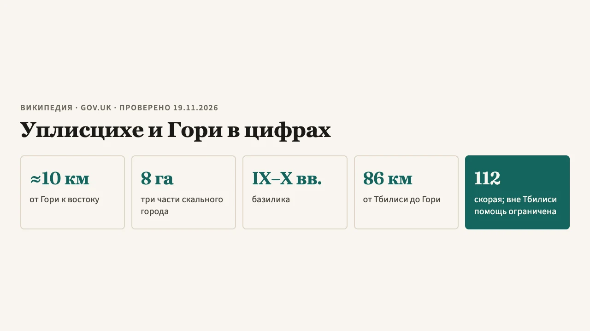
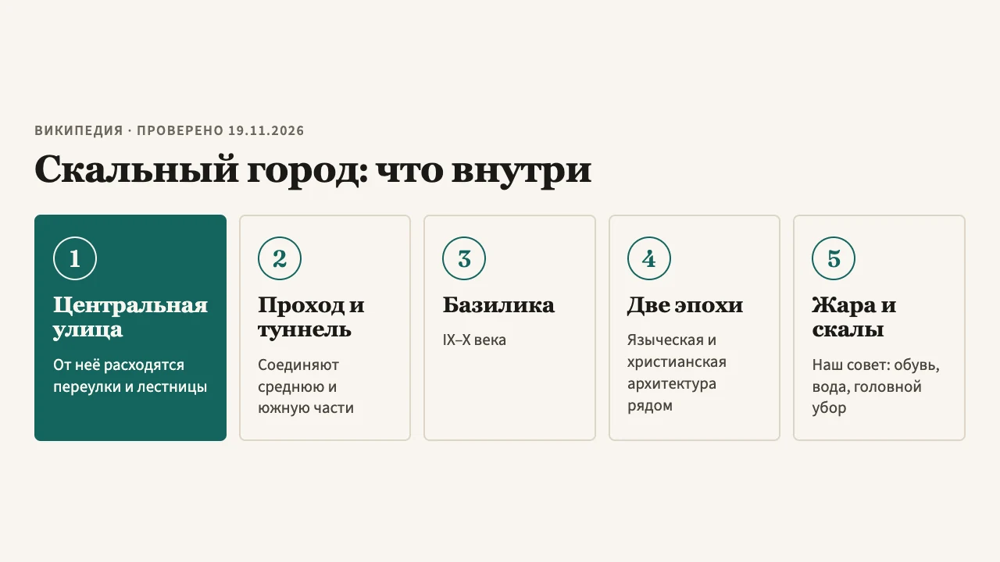
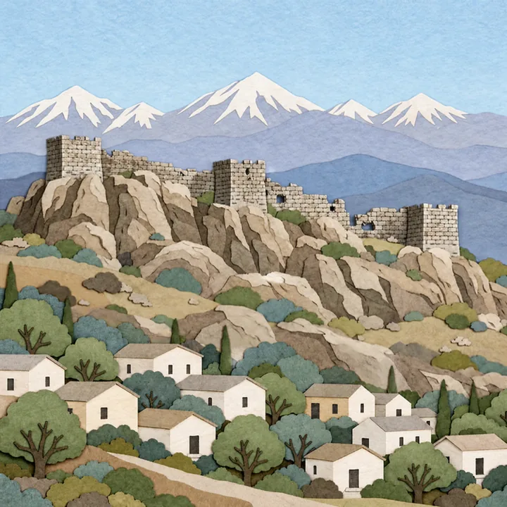

- От Гори
- ≈10 км
- Площадь
- 8 га
- Базилика
- IX–X вв.
- Гори от Тбилиси
- 86 км
- Скорая
- 112
Статья входит в справочник о медицине в Грузии.
Пещерный город Уплисцихе
Это древний город, который высекли прямо в скале на востоке Грузии. По Википедии (на английском), он стоит около 10 км к востоку от Гори, в крае Шида-Картли.
Где стоит. Город занимает высокий скалистый левый берег Куры. По-грузински эту реку называют Мтквари.
Сколько ему лет. Постройки здесь — от раннего железного века до позднего Средневековья.
Две веры рядом. Википедия выделяет особую черту: здесь соседствуют языческая и христианская архитектура.
Три части. Комплекс условно делят на южную, среднюю и северную части. Вместе они занимают около 8 га.
Что такое пещера здесь. Поясним: пещера в этом городе — не природная полость, а помещение, вырубленное людьми в камне. Поэтому Уплисцихе и называют скальным, или пещерным, городом.
Ещё один город в скале — Вардзия: у нас есть путеводитель по Вардзии.


Что внутри скального города
В Уплисцихе всё устроено вокруг центральной «улицы». От неё, по Википедии, расходятся узкие переулки, а местами и лестницы — к разным постройкам.
Проход и туннель. Средняя часть города соединена с южной узким проходом, вырубленным в скале, и туннелем.
Базилика. Среди построек — христианская базилика IX–X веков. А в целом в городе, по Википедии, соседствуют языческая и христианская архитектура.
Наш совет. Лето в этих краях обычно жаркое — так Википедия описывает климат соседнего города. Возьмите воду и головной убор. Наденьте закрытую обувь с цепкой подошвой: по городу ведут каменные переулки и лестницы, а на спуске легко оступиться. Как распознать перегрев и что делать, мы разобрали в путеводителе по Мцхете.

Что посмотреть в Гори
Википедия (на английском) выделяет здесь крепость и музей Сталина — о них ниже. Сам город, по её данным, лежит в 86 км к западу от Тбилиси, там, где Кура сливается с Большой Лиахви, на высоте 588 м над уровнем моря.
Кто здесь живёт. Население — 42 596 человек на 1 января 2024 года (Geostat), эту цифру приводит Википедия.
Какое лето. Обычно жаркое — это тоже из Википедии.
Наш совет. Воду и головной убор берите и в город.
Рядом линия. Википедия отмечает, что город близко к зоне грузино-осетинского конфликта. Что об этом пишут GOV.UK и Канада — в разделе о линии ниже.

Крепость Гори
Это средневековая цитадель на скалистом холме прямо над городом, пишет Википедия (на английском).
Наш совет. К крепости придётся подниматься по склону холма. В жару идите утром или ближе к вечеру и не забудьте воду.
Музей Сталина
В 1957 году музей официально посвятили Сталину, уроженцу этого города, — пишет Википедия (на английском). Музей рассказывает о его жизни и сохраняет советские черты.
Как устроен. У музея три части, все — на центральной площади; одна из них — дом, где он родился.
Перед визитом. Когда музей открыт и сколько стоит вход, уточняйте на месте: официальных данных мы не нашли.
Линия Южной Осетии рядом с Гори
Официальные сайты советуют держаться от неё в стороне: GOV.UK — не ездить в Южную Осетию и Абхазию, Канада — избегать поездок в сами регионы и ближе 5 км к линии, кроме трассы E60. Ниже — пересказ обоих сайтов; своей оценки мы не даём.
GOV.UK. На странице Warnings and insurance (на английском, обновлена 12 ноября 2026 года) британский МИД — FCDO — советует не ездить в оккупированные Россией регионы: Южную Осетию и Абхазию. В районы сразу у административных границ с ними — только по крайней необходимости.
Полис. Там же GOV.UK предупреждает: полис может не действовать, если ехать вопреки советам FCDO.
Карта FCDO. На подробной карте FCDO (октябрь 2025 года) Гори — в зелёной зоне. Севернее — узкая оранжевая полоса («только по крайней необходимости») и красная зона Южной Осетии. Уплисцихе на карте не отмечено. Сама карта предупреждает, что не годится для точного определения мест.
Канада. Правительство Канады (на английском) советует избегать поездок в сами регионы и ближе 5 км к административной границе с ними — кроме трассы E60. Ещё оно пишет:
- границы плохо обозначены и часто меняются;
- задержать могут даже за случайное пересечение линии;
- у линий есть риск неразорвавшихся боеприпасов и мин.
Наш совет. Держитесь главных дорог и не ищите «короткий путь» по сельским. Если навигатор ведёт в незнакомую сторону, остановитесь и вернитесь на знакомую трассу.

Как добраться до Уплисцихе
Ориентир — Гори: по Википедии, он лежит в 86 км к западу от Тбилиси. А Уплисцихе — примерно в 10 км к востоку от него.
Время в пути, расписания и транспорт мы не даём: официальных данных не нашли.
Наш совет. Закладывайте на поездку запас времени: в соседнем городе стоят крепость и музей, их легко добавить к поездке. Если поедете сами, прочитайте, как водить в Грузии.
Где врач рядом с Уплисцихе
Срочно — звоните 112. GOV.UK (на английском) советует набрать 112 и попросить скорую — по-английски ambulance.
Чего ждать. Вне Тбилиси, по GOV.UK, медицинская помощь ограничена. Канада добавляет: в сельских районах не хватает медикаментов, расходных материалов и персонала, а скорая может не добраться.
Природа. В Грузии часто бывают небольшие землетрясения, пишет GOV.UK (на английском). Летом есть риск молний и природных пожаров, особенно в горах.
Если не срочно. Клиники ближайшего города собраны в каталоге клиник Гори на 100doc.ge.
Полис. Для въезда в Грузию иностранцу нужен полис с покрытием не меньше 30 000 лари — подробнее в нашем разделе о полисе для въезда.
Наш совет. Сохраните 112 в телефоне и держите заряд. Если что-то случилось, скажите диспетчеру, что вы в Уплисцихе, и назовите ближайший город. Подвернули ногу на лестнице — не спускайтесь в одиночку: попросите о помощи других туристов.
Частые вопросы
Где находится Уплисцихе?
Около 10 км к востоку от Гори, в крае Шида-Картли, на левом берегу Куры (Мтквари).
Сколько лет Уплисцихе?
Постройки здесь — от раннего железного века до позднего Средневековья, по Википедии. Христианская базилика — IX–X веков.
Что посмотреть рядом?
В соседнем городе — средневековую крепость на скалистом холме и музей, который в 1957 году официально посвятили Сталину.
Как добраться до Уплисцихе?
Ориентир — Гори: он в 86 км от Тбилиси, а оттуда доезжать до скального города ещё примерно 10 км к востоку. Время в пути и транспорт не даём: официальных данных не нашли.
Что официальные сайты пишут о линии?
Своей оценки не даём. GOV.UK советует не ездить в Южную Осетию и Абхазию, а Канада — избегать поездок в сами регионы и ближе 5 км к линии, кроме трассы E60.
Где врач, если что-то случилось?
Срочно — 112, попросите скорую. Не срочно — клиники ближайшего города. Вне Тбилиси помощь ограничена.
Что взять с собой в Уплисцихе?
Воду, головной убор и закрытую обувь: лето в соседнем городе, по Википедии, обычно жаркое, а по городу ведут каменные лестницы. Сохраните в телефоне 112.
Источники
- Википедия: Uplistsikhe — расположение, Кура, три части, туннель, базилика IX–X веков (на английском)
- Википедия: Gori — 86 км от Тбилиси, Лиахви, 588 м, климат, население (на английском)
- Википедия: Gori Fortress — цитадель на холме (на английском)
- Википедия: Joseph Stalin Museum — 1957, три части, дом (на английском)
- GOV.UK: Warnings and insurance — советы о линиях, карта FCDO, полис, обновлено 12 ноября 2026 года (на английском)
- GOV.UK: Safety and security — землетрясения, молнии и пожары (на английском)
- GOV.UK: Health — 112 и медпомощь вне Тбилиси (на английском)
- Правительство Канады: 5 км, E60, задержания, мины, медицина в сёлах (на английском)
Это справочная информация, а не медицинская консультация и не оценка поездки. Что открыто в Уплисцихе, уточняйте на месте. Проверено 19 ноября 2026 года.